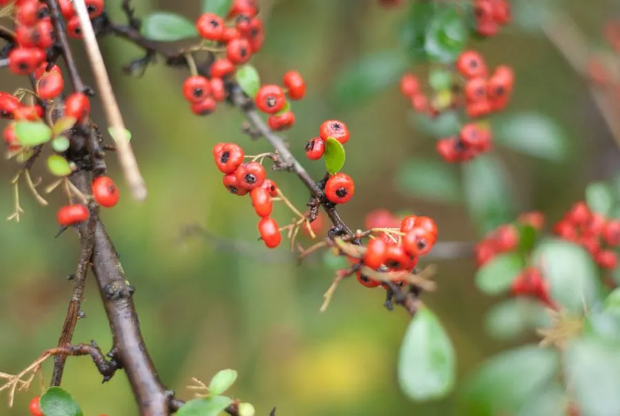

灌木与花木 · 植物界
火棘 Pyracantha fortuneana

中国南方常见的常绿灌木，秋冬结满橙红色小果、成串如火，果实可食且能救荒，故又称“救军粮”。
- 分类
- 门被子植物门纲木兰纲目蔷薇目科蔷薇科属火棘属
- 栖息环境
- 海拔 2000 米以下的山坡、路旁与灌丛，喜光耐旱耐瘠薄
- 地理分布
- 中国陕西、甘肃至长江流域以南及西南地区，印度、缅甸也有分布
- 保护级别
- 暂无评估；中国未列入国家重点保护野生植物名录
物种志
火棘为常绿灌木，高可达 3 m，枝条拱形下垂，侧枝先端常成刺状；叶片互生，倒卵形至长椭圆形，边缘具细锯齿。花期 3–5 月，复伞房花序生于短枝顶，花白色、密集，花径约 1 cm；果实为小梨果，球形，成熟时橙红至深红色，直径约 5 mm，成串密集地挂在枝头，可从秋季宿存至翌年春季。
火棘分布于中国陕西、甘肃至长江流域以南及西南地区，也见于印度、缅甸，喜光、耐旱、耐瘠薄，适应性强，常生于山坡、路旁与灌丛。秋冬红果满枝，是优良的观赏灌木与盆景材料；果实富含维生素 C 与糖类，可生食或酿酒，灾荒年代曾作为救荒食物，故有“救军粮”之称；根、叶与果实可入药。火棘耐修剪，也是绿篱与水土保持的常用树种，在西南山区常见成片分布。
形态与习性
- 株高可达 3 m，枝条拱形下垂
- 花期3–5 月，花白色密集
- 果期9 月至翌年 1 月，小梨果橙红色
- 光照喜光，不耐长期荫蔽
- 水分耐旱，怕积水
- 土壤适应性强，耐瘠薄
- 主要用途观赏与盆景、果实可食酿酒、绿篱与水土保持
趣味知识
- 火棘秋冬结满橙红色小果，成串如火，因此得名“火棘”。
- 火棘的果实富含维生素 C，灾荒年代曾被当作救荒食物，故称“救军粮”。
- 火棘耐旱耐瘠薄，在西南山区的荒坡上常成片生长。
- 火棘常被制作成盆景，红果与绿叶相衬，观赏期可长达数月。